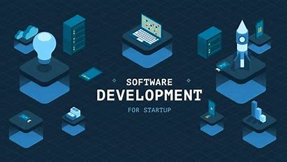
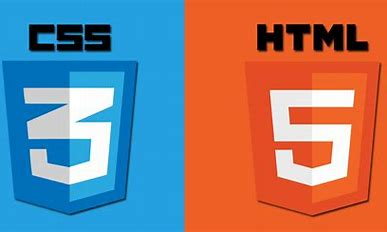

delve deep into the mind of an upcoming programmer

Name:Laleti Chihombe
Date:17 may 2024
Current Role/Position:web developer student
Field of Interest:art

html and css right now are my specialty , although i am working on enhancing it
i need to dimprove on my JavaScript , as it is the language that confuses me
and keeps me up all night , i believe once i master this i will be able to unlock a whole new coding world
my interest in the developing world is the languages , as a programmer we are very curious , we spent our lives wondering how things work how apps are built and now we get to fill our curiosity ,we learn new things and we get to find out where the world is going
although am not particulaly good in javascript , one of my interests , how apps fully function because the new world we are entering is ran by programming.
In a work environment, I value collaboration, respect, innovation, and a focus on growth and development.i believe these values foster teamwork.These values also provide us opportunities to learn.
my mother owns a small business , to start coding so i cant help her with E-commerce: Building e-commerce platforms, online marketplaces, and payment processing systems for retail companies and online businesses.
Mobile Development piqued my interest developing applications for mobile devices , the way we use uber eats app or even whatsapp itsself.
in the next 1-2 years , i want to have furthered my knowledge in programming ,learn new programming languages , that will further help me to develop my coding skills
i want to have built a fully functional app to help promote small business and i hope to have built a professional network.
my long term goals- not only do i aim to be a techinical expert in the programming domain but i also aspire to become an educator within the software development community to share my knowledge and experience passed on to me by my educators with the future generation , so that they may be able to further the amazing future in coding
my skills are mainly still based on html and css and soon js , i want to teach the future generation the fundamentals of coding , as programmers we are constantly curious , i want to fill their curiosity and i continue filling mine
i am to graduate at codespace with a diploma and apply to further my studies in the programming field , this will assist me in learning new coding languages
with all the information , i would have absored from my educators by the end of the year , is the tool that i will use to create my fully functional app
after futhering my software developing studies , i believe i will have the necesary qualifications to teach young minds and with curiosity being my stepping stone , i hope to have mastered several coding languages in the next 3 years
with these stepping stones , i believe i would be a greater mentor to the young minds
with all these goals being in mind , learning programming languages is still not the easist thing in the world it has complex concepts and requires patience and persistance and keeping up with new forever evolving languages will not be a walk in the park aswell
i believe that as the world is further developing , people's minds are too , as software developing will take over in the future , people have seen this and way too many people are partaking in this field , which will make finding a job in this industry a very hard thing to do .
i believe overcomin these challenges will not be the easiest thing to do , although learning new languages is hard , i believe that i can easily solve this through daily practice of building my own websites , trying to build existing apps , and never giving up.
The field will most likely be difficult to get into , but i believe with daily practice , i will be able to enhance my coding skills , increasing my qualifications
opportunities for career growth , as 2k generation we have many resources . we can take online cources , watvh youtube videos or lectures online to be able to expand our knowledge on this field.
On the fact that many people are studying or have studied this field , they can all be of help , most of my friends studied this field , which grants me an oppotunity to enhance my skills by often asking them if i dont understand , or giving them my code so they can give me feedback on what needs to be fixed.
.jpeg) my mother owns a small business , to start coding so i cant help her with E-commerce: Building e-commerce platforms, online marketplaces, and payment processing systems for retail companies and online businesses.
my mother owns a small business , to start coding so i cant help her with E-commerce: Building e-commerce platforms, online marketplaces, and payment processing systems for retail companies and online businesses.